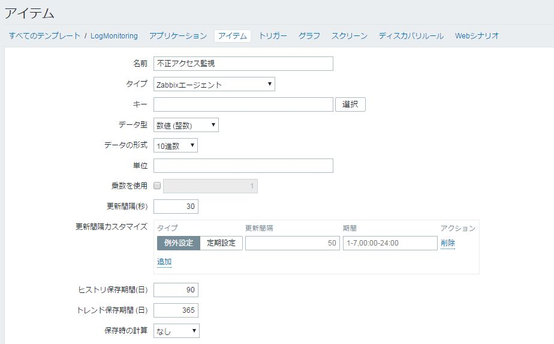
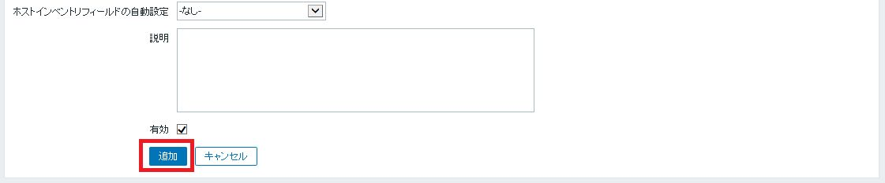

| Zabbix 構築発展編(AWS編) | |
| 大木雅宏 | |
| (2018) | |
AWSを使用した発展的な構築
第1章 はじめに
1.1 本書の概要
発展編(AWS編)では､基礎編に加えて､以下を説明します｡
主にAWSを対象としたZabbixとの連携を行います｡
･オートディスカバリによる端末の自動検知
･アクセスログの解析結果により､AWS APIでネットワークACLでアクセスをブロック
･CloudwatchとZabbixとの連携
1.2 環境について
この環境では､Zabbixサーバをローカルに設置し､AWS上のWEBサーバを監視します｡
今回はt2.microインスタンスでWEBサーバとDBサーバを入れた1台を作成します｡
このWEBサーバは検証で使用する目的のため、AWSのセキュリティグループなどを十分に考慮していない構成になっていますので、本番環境で使用しないでください。
また､本書ではAWSを主に扱うためAWSのアカウントがあることが前提条件です｡また､AWS上でWEBサーバを起動する必要があります｡
本書では､Apache/PHP/MySQLを使用したWordpressサーバを対象にしています｡
1.3 テスト環境構築
上記の環境は、これより説明する手順に沿って構築を行ってください。
ネットワークはdefault VPCを使用します｡
特にVPCの削除などを操作されていない方はそのまま進めてください。消去されている方は､Default VPCの復元 を参考に復元して下さい｡
1.4 AWSKeyPairの作り方
※ここではAWSのkey Pairが必要になります｡作成されていない方は下記の｢AWSKeyPairの作り方｣を参照してください。
AWS key PairはSSHでEC2サーバにログインするために必要となります｡
(1) キーペアの選択1
AWSの一覧のメニューからEC2を選択します｡
(2) キーペアの選択2
EC2の画面が表示が表示されますので､左側のメニューからキーペアを選択します｡
(3) キーペアの作成1
キーペアーの作成をクリックします｡
(4) キーペアの作成2
キーペアー名に任意の名前を入力し､作成ボタンをクリックします｡
(5) キーペのアダウンロード
自動でダウンロードされます｡keyの作成は終了です｡
1.5 Cloudformationを使用したWordpressサーバの作成
(1) Cloudformationを使用したWordpress環境構築
Wordpress環境はCloudformationで構築します｡Cloudformationとは｢Infrastructure as Code｣と一般的には呼ばれ､予め記述されてたコードに沿ってサーバにソフトウェアをインストールしたり設定することが出来ます｡
最初にCloudformationを開くと下記のような画面が表示されますので､githubにあるテンプレートファイル｢wordpress.yml｣をダウンロードして ｢新しいスタックの作成｣ボタンをクリックします｡
Wordpress用テンプレートファイル(2) テンプレートのアップロード
｢テンプレートをAmazonS3にアップロード｣を選択し､｢ファイルを選択｣ボタンをクリックしてダウンロードしたファイルを指定し､｢次へ｣をクリックします｡
(3) パラメータの設定
下記の画面が出ますので､設定を行います｡｢KeyName｣ですが､sshアクセスする際に必要となります｡
| DatabaseName | DatabasePassword | DatabaseUser | Keyname |
|---|---|---|---|
| Wordpress | ｢任意パスワード｣ | admin | プルダウンより選択 |
(4) オプション設定
次のオプション画面は､何も入力せず｢次へ｣をクリックして下さい｡
(5) 確認画面
確認画面が表示されますので｢作成｣をクリックして下さい｡
(6) 構築完了の確認
Cloudformationの概要画面が表示されますので､｢状況｣の部分が[CREATE_COMPLETE]となれば成功です｡
(7) URLの取得
Cloudformationの「出力タブ」にURLが記載されています。
(8) Wordpressのセットアップ1
上記のURLをクリックします｡ec2から始まる部分は各自の環境で読み替えて下さい｡
[例] http://ec2-VVVV-XXXX-YYYY-ZZZ.ap-northeast-1.compute.amazonaws.com/(9) Wordpressのセットアップ2
あとは､Wordpressのセットアップ画面が走りますのでセットアップを行って下さい｡
※検証が全て終わったらCloudformationのメニューよりスタックを忘れずに消去して下さい｡EC2を個別に消すと全てが消せなくなる場合があります
1.6 監視対象サーバの登録
以上の操作で監視対象となるWEBサーバの構築が完了しましたので、Zabbixサーバに登録します。作成したWEBサーバのIPアドレスは以下を参照してください。
Zabbixサーバへの登録方法につきましては、基礎編で説明していますので、ここでは省略します。
1.7 Cloudformationを使用しての環境の削除方法
(1) Cloudformationの削除
このあと続けて検証を行っていきますが､必要がなくなった場合は､Cloudformationを使用して削除します｡Cloudformationで作成したスタックを選択して｢アクション｣から｢スタックの削除｣を選択します｡
第2章 Zabbixエージェントを使ったログ監視
2.1 実行環境
(1) ログ監視の流れ
Zabbixエージェントを使用したログ監視は前巻の基礎編でもまとめていますが、ここでは少し手法を変えて、スクリプトを使用した障害対応方法について説明します。
今回想定するシュチュエーションは
①Wordpressサーバのwp-login.phpに対して
②1分間に30回以上のアクセス数があった場合に
③不正アクセスのIPアドレス(条件に合致した1件のみ)を検知して
④ネットワークACLの最大の値を調べ
⑤不正アクセスのIPを(拒否)登録していきます｡
※Wordpress以外の場合は、各々設定を読み替えてください。(それぞれにヒントは記載しておきます)
ここで紹介するプログラムは全てgithub上にあります｡
GitHub上のプログラム(2) Zabbix-agentの設定変更
今回の環境では、先ほど作成したWordPressのサーバで下記の設定が必要になります。
監視するログファイル(/var/log/httpd/access_log)がzabbixユーザでもアクセスできる場合は問題ありませんが、基本的に一般ユーザ(zabbixユーザ)でアクセスできませんので、zabbixユーザにroot権限を与えます。
zabbixエージェントをrootで実行する設定方法は以下になります。
# vi /etc/zabbix/zabbix_agentd.conf
下記のコメントアウトを外し、値を1に修正 ※Zabbixサーバと監視対象のWEBサーバで設定
#AllowRoot=0
AllowRoot=1
Zabbixのコマンド実行を許可するために下記のコメントアウトを外し、値を1に修正
※こちらはZabbixサーバのみ
#EnableRemoteCommands=0
EnableRemoteCommands=1
Zabbixのコマンド実行を許可するために下記のコメントアウトを外し、値を1に修正
# service zabbix-agent start
2.2 テンプレートの作成(Zabbixサーバ)
(1) テンプレートの作成
①Zabbixサーバでログ監視用のテンプレートを作成します。
上部メニューの「設定」-「テンプレート」をクリックし、テンプレートリストの右上より「テンプレートの作成」をクリックします。
②今回のテンプレート名は"LogMonitoring"としています。
グループも合わせて新規で作成しましょう。
入力を完了したら「追加」ボタンをクリックします。
③画面が切り替わり、"テンプレートを追加しました"と表示されることを確認します。
2.3 アイテムの作成
(1) アイテムの作成
①次に、ログを監視するアイテムを作成します。
画面を下にスクロールして、先ほど作成したテンプレート(LogMonitoring)の項目「アイテム」をクリックします。
②右上の「アイテムの作成」をクリックして、アイテムを新規に作成します。
③今回作成するアイテムは､ZabbixエージェントからZabbixサーバに対してログを送信するというアクションを起こすタイプになります。そのため、タイプは"Zabbixエージェント(アクティブ)"を選択します。
その他の設定値は以下の通りです。
| 名前 | 不正アクセス監視 |
|---|---|
| タイプ | Zabbixエージェント(アクティブ) |
| キー | log[/var/log/httpd/access_log,"POST /wp-login.php",us-ascii,,skip,] (※Github上にパラメータを記載しています。) |
| データ型 | ログ |
| 更新間隔(秒) | 60 |
| アプリケーションの作成 | LogMonitoring |
④「キー」の値は、欄の右の「選択」から参照可能です。「選択」ボタンをクリックします。
⑤新しく「標準のアイテム」というウィンドウが表示されますので、タイプを「zabbixエージェント(アクティブ)」に変更して次の項目をクリックします。
log[file,<regexp>,<encoding>,<maxlines>,<mode>,<output>]
※似た名前がありますので注意して下さい
⑥クリックした「キー」情報が欄に入力された状態で、アイテムの入力画面に戻ります。
入力されている「キー」情報の項目の意味は、以下の通りです。
<file>に"/var/log/httpd/access_log"を、<regexp>に"POST /wp-login.php"キーワードとして該当するログ1行を取得するという内容ですので､キーの内容を
log[/var/log/httpd/access_log,"POST /wp-login.php",us-ascii,,skip,]に変更します｡(｢us-ascii,,skip｣の間には｢,,｣と2個続きます)
| file | 監視対象とするファイル名を絶対パスで指定 |
|---|---|
| regexp | ログから検知するキーワードとなる文字列を入力(正規表現も使えます) |
| encoding | 監視対象とするファイルの文字コードを指定 |
| maxlines | 1秒間にエージェントがZabbixサーバに送信する最大行数(zabbix_agentd.confのMaxLinesPerSecondの値を上書き) |
| mode | 指定したログファイルを読込む(allは最初から、skipは最後からで、デフォルトはall) |
| output | ログを抽出して監視データとして収集(デフォルトでは行全体) |
⑦入力が完了したら、「追加」ボタンをクリックします。
⑧再びアイテム一覧画面に戻るので、先ほど作成した"ログの文字列監視"が追加されていることを確認します。
2.4 トリガーの作成
(1) トリガーの作成
①トリガー作成画面へ移動し､上部メニューから「トリガー」をクリックし、トリガーの作成に移ります。
②右上の「トリガーの作成」をクリックします。
③トリガー設定情報の入力
今回の想定では、1分間に30回のPOST(認証ログイン)があった場合に不正アクセスがあるとして、ステータスを"軽度の障害"にするというものです。そして、復旧条件としては、直近1分間のPOSTが5回以下になった時としています。
この設定は参考値ですので、実運用においては、設置した環境に適した設定を行ってください。
| 名前 | ログ監視：ログの文字列監視(AWS連携) |
|---|---|
| 条件式 | ({TRIGGER.VALUE}=0 and {LogMonitoring:log[/var/log/httpd/access_log,"POST /wp-login.php",us-ascii,,skip,].count(60)}>=30) or ({TRIGGER.VALUE}=1 and {LogMonitoring:log[/var/log/httpd/access_log,"POST /wp-login.php",us-ascii,,skip,].count(60)}>5) (※Github上にパラメータを記載しています。) |
| 深刻度 | 軽度の障害 |
【上記､条件式の説明】
トリガーの基となる｢アイテム｣をベースに、時間やカウントを等号・不等号で組み合わせます。
Zabbixではトリガー条件を満たすと「障害」(True)と判断され、満たさなくなると「正常」(False)と判断されます。
({TRIGGER.VALUE}は、値が0の時は「正常」で、値が1の時は「障害」という意味になります。)
上記は{TRIGGER.VALUE}が正常値の状態(0)から60秒の間に30回以上の不正アクセスの場合は障害とみなします｡
次に{TRIGGER.VALUE}が異常値の状態(障害時を示す1)から60秒間で5回以上の場合は､障害が発生し続けているという意味になります｡
これは復旧条件の項目がないため｢障害が発生し続けている｣となります｡
{LogMonitoring:log[/var/log/httpd/access_log,"POST /wp-login.php",us-ascii,,skip,,].count(60)}>=30は、先程作成したアイテム(POST /wp-login.phpの文字列監視)が直近60秒に30回以上検知されたときに条件を満たすという意味になります。
この2つはandでつながっているため、合わせると下記のような意味になります。
●「正常」な状態にあって、かつ1分間に30回以上の"POST /wp-login.php"があった場合を不正アクセスとして判断する。
次に、上記の式だけでは、一度障害と判断されると、その後障害として残り続けてしまう(復旧条件がない)ため、復旧条件式を追加します。
復旧条件としては、
●障害が発生していることを前提とするため{TRIGGER.VALUE}の値が1(障害発生中)で、1分間のアクセスが5回以下になった場合、0(「正常」)な状態とします。
前者の障害と判断する条件と、後者の復旧と判断する条件を"or"で結ぶことで、条件式全体で1分間のアクセスが30回以上ならば障害とし、1分間のアクセスが5回以下になれば落ち着いたとして判断します。
④アイテム名は右の「追加」ボタンから選択して、条件式を修正します。
⑤「追加」ボタンをクリックすると、「アクションの実行条件」という新しいウィンドウが開きます。
アイテム欄右にある「選択」ボタンをクリックします。
⑥「アイテム」のウィンドウが新しく開きます。トリガー条件とするアイテムを選びますので、右上のグループから「Log Monitoring」を選び、
そこで表示されるアイテム「不正アクセス監視」をクリックします。
⑦再び「アクションの実行条件」ウィンドウに戻ります。
関数の欄から条件式を利用することもできますが、選択肢が多すぎて混乱するため、
ここでは特に入力せずに進めてOKです。条件式はこの後の操作で修正します。
アイテム欄には先ほど選択したアイテム名が入力されていますので、このまま「挿入」ボタンをクリックします。
⑧最初のトリガーの設定画面に戻りますので、条件式の内容を修正します。
長々と文字が綴られているかと思いますが、これはログ監視アイテムのキーになります。
トリガーはこのキーに結び付けられた条件式により、障害の有無を判断します。
| 条件式の修正前 | {LogMonitoring:log[/var/log/httpd/access_log,"POST /wp-login.php",us-ascii,,skip,].last()}=0 |
|---|---|
| 条件式の修正後 | ({TRIGGER.VALUE}=0 and {LogMonitoring:log[/var/log/httpd/access_log,"POST /wp-login.php",us-ascii,,skip,].count(60)}>=30) or ({TRIGGER.VALUE}=1 and {LogMonitoring:log[/var/log/httpd/access_log,"POST /wp-login.php",us-ascii,,skip,].count(60)}>5) |
入力されていたキーの最後"last()}=0"を、"count(60)}>30"に修正し、その他全体は前述の表を参照してコピペ・修正してください。
この修正した"count(60)>30"は、直近1分間(60秒)で監視対象のログに｢監視対象のキーワード｣の出現回数をカウントするという意味で、そのカウントが30より大きくなった場合(つまり直近1分間の内、ログイン失敗が30回あった場合)にトリガーを反応させるという動きになります。
※Zabbixの障害は、設定したトリガーが条件を満たした場合に、設定されている深刻度を出力します。
条件を満たさなくなった場合が正常化したという判断になります。
⑨必要な情報を入力したら「追加」ボタンをクリックして、トリガー設定を登録します。
⑩必要な情報を入力したら「追加」ボタンをクリックして、トリガー設定を登録します。
(4) 監視対象サーバへテンプレートをリンク
①トリガーの設定が完了したら、今度は動作の確認をします。
監視対象サーバに作成したテンプレートを割当てましょう。
上部メニューの「設定」-「ホスト」をクリックし、監視対象サーバ名「zabbix-agent」をクリックします。
②次に、上部メニューの「テンプレート」をクリックします。
"新規テンプレートをリンク"項目から、右端の「選択」ボタンをクリックします。
③新しくテンプレートウィンドウが開くので、右上のグループをクリックして、「LogMonitoring」を選択します。
一覧にログ監視テンプレート(LogMonitoring)が表示されますので、チェックを入れて、「選択」ボタンをクリックします。
④再びホストの画面に戻りますので、「新規テンプレートをリンク」項目の下にある青字のリンク「追加」をクリックします。
⑤「テンプレートとのリンク」項目に、「LogMonitoring」の名前が追加されましたら、「更新」ボタンをクリックして登録します。
⑥ ホストの一覧画面に戻りますので、設定が反映されたことを確認します。
(5) ログの取得確認
①以上の設定が完了しましたら、「監視データ」-「最新データ」に移り、実際にログが取得できていることを確認します。
「ホスト」欄の「選択」ボタンをクリックします。
②新しくウィンドウが開きますので、WEBサーバにチェックを入れて「選択」ボタンをクリックします。
③先ほどの画面に戻りますので、「フィルタリング」ボタンをクリックします。
④アイテム一覧が表示されますので、LogMonitoringを確認し、ログが取得できていれば成功です。
2.5 AWSのネットワークACLについて
まずは､前提条件となる知識として､AWSでは､接続元のIPアドレスをブロックするために｢ネットワークACL｣というのが用意されています｡
具体的には､AWSのサービスから｢VPC｣を選択して､セキュリティの｢ネットワークACL｣を選択します｡サーバが属するサブネットを選択し､
そこの｢インバウンドルール｣にIPアドレスを入力することでブロックが可能です｡
例えば192.168.0.1/32からのアドレスを全てブロックしたい場合は､下記のように｢ルール｣を一番若い番号に割当て｢全てのトラフィック｣を拒否にします｡ IPアドレスには､ネットワークアドレスを入れた形で入力します｡(/32や/24といった形で入力します)
また､AWSにはACLの数に制限があります｡デフォルトは20ですので20個のACLが作成出来ます｡(AWSに対して申請することにより上限緩和は可能です)。
ネットワークACLの制限2.6 実行環境構築の整備について
ではここで実際にAWSとZabbixの連携の環境を整えて行きます｡
(1) IAMの設定
最初にここで提供するPythonプログラムはAWSのCloudwatchからCPUやメモリなどの値を取得してきます｡(直接Zabbixが取得するわけではありません)
このPythonプログラムがZabbixに値を渡し､Zabbixがグラフ化を行ったりします｡
AWSより何かしら値を取得したりするにはアクセスキーIDとシークレットアクセスキーというのが必要になります｡(IDとパスワードみたいなものです)
このそれぞれのkeyを取得するためにはまずユーザを作る必要があります｡そのユーザに対してCloudwatchを閲覧する権限を付与します｡
最初にAWSのメニュー画面でIAMを選択します｡
(2) ユーザを選択
左側のメニューからユーザを選択します｡
(3) ユーザ追加
ユーザ名を入力して､｢アクセスの種類｣で｢プログラムによるアクセス｣にチェックを入れて｢次のステップ:アクセス権限｣ボタンをクリックします。
(4) アクセス件の付与
① ｢既存のポリシーを直接アタッチ｣を選択して下の画面から｢CloudWatchReadOnlyAccess｣を選択します。
② 引き続き｢AmazonS3FullAccess｣を選択します。
③ 最後に｢AmazonVPCFullAccess｣を選択して｢次のステップ:確認｣をクリックします｡
(5) アクセスキーIDとシークレットアクセスキーのダウンロード
このまま確認を行いユーザを作成すると以下の画面に表示されます｡｢.CSVのダウンロード｣を選択するとkeyのダウンロードがされます｡
画面でも確認が出来ます｡このアクセスキーIDとシークレットアクセスキーを記録しておいて下さい｡シークレットアクセスキーは｢表示｣をクリックすると表示されます｡
(6) ネットワークACLIDの調査
最初にブロックするネットワークACLIDを調べます。
先程説明したAWSの画面の下記の部分でネットワークACLIDを取得できます。まずはこちらを書き留めます。
(7) インバウンドルールの調査
次にインバウンドのルールで「ルール#」の最大の値を調べます。ここで「*」しか無い場合は、AWSネットワークACLについてで説明した内容で下記のように入力してください。
| ルール# | タイプ | プロトコル | ポート範囲 | ソース | 許可/拒否 |
| 100 | すべてのトラフィック | すべて | すべて | 0.0.0.0/0 | 許可 |
Zabbixで検知後､AWSに対してコマンドを使用してネットワークACLにIPアドレスを登録します｡まずは､コマンドをインストールする設定を行います。
今回は、Pythonを使ってAWSに対しての操作を行います。AWSにはAPIが用意されていてこのAPIを使えばインスタンス(サーバ)をAPI経由で起動させたり、停止させたり出来ます。
AWS SDK for Python (Boto3)の公式ページ(8) pipのインストール
注) 以降Zabbixサーバで行います
pipはPython 2.7.9以降、Python 3.4以降のバージョンにはデフォルトでインストールされていますが､ 通常のCentos7の場合は､2.7.5がインストールされます｡(2018年5月13日時点)
今回の操作では、Zabbixエージェントはrootとして動作します。(zabbix_agentd.confのAllowRootを"1"に設定した)ので、rootユーザで設定を行います。
Zabbixサーバにログインしてpythonをインストールします｡その前にOSやアプケーションを最新にします。
# yum -y update
# reboot
# yum -y install python
# python --version
Python 2.7.5
次にpipをインストールします｡pipとはpythonのパッケージ管理システムです｡
# pip --version
pip 9.0.1 from /usr/lib/python2.7/site-packages (python 2.7)
上記のように何かしらのバージョンが出てきた場合は､pipのインストールは必要ありません｡
何も出てこない場合は､下記のコマンドを実施してpipをインストールします｡
# yum -y install wget
# wget https://bootstrap.pypa.io/get-pip.py
# python get-pip.py
(9) AWS SDK for Python (Boto3)のインストール(python)
AWS SDK for Python (Boto3)をインストールします｡
# pip install boto3
･････
Successfully installed boto3-1.4.7 botocore-1.7.41 s3transfer-0.1.11
ここで下記のようなpipのアップグレードのエラーが出ても今回は無視してください。
You are using pip version 9.0.1, however version 9.0.3 is available. You should consider upgradsing via the 'pip install --upgrade pip' command.
(10) アクセスキーID と シークレットアクセスキーの設定
AWSを操作するためには先程､取得したアクセスキーIDとシークレットアクセスキーが必要になります｡
Access Key とSecret Keyを取得したらサーバに設定を行います｡
仮に下記のようなAccess KeyとSecret Keyが得られたとします｡
| アクセスキーID | シークレットアクセスキー |
| AKIAIXXXXXXXXXXXXXXXXXXXX | AB12345YYYYYYYYYYYYYYYYYYYYYYY |
AWS CLIをインストールします。
# pip install awscli --user
次にこの情報をコンソール上で入力します｡rootユーザで実行します｡
# /root/.local/bin/aws configure
AWS Access Key ID [None]:AKIAIXXXXXXXXXXXXXXXXXXXX
AWS Secret Access Key [None]:AB12345YYYYYYYYYYYYYYYYYYYYYYY
Default region name [None]:ap-northeast-1
Default output format [None]:
試しに､S3にバケットを作成して､コマンドを実行してみましょう｡一覧が取得出来たら成功です｡AWSの管理画面でS3上にバケットを作成しておいてください。
list_bucket.pyファイルはこちら
にあります。
#list_bucket.pyファイルを作成します。レスポンスがdict形式(辞書形式)で返ってきます。
# vi list_bucket.py
import boto3
s3 = boto3.client('s3')
response = s3.list_buckets()
print(response)
#作成したファイルを実行します。ずらずらと結果が出てきますが､上記のようにエラーがなくレスポンスらしきものが返ってきていればAPIでの接続は､OKだなと思って下さい｡
# python list_bucket.py
u'Owner': {u'DisplayName': 'hoge', u'ID': 'fe6d8acf4490e2403e2434348fac73bf5a26f9376efd5e9b21e92b1'}, u'Buckets': [{u'CreationDate': datetime.datetime(2017, 8, 26, 6, 42, 46, tzinfo=tzlocal()), u'Name': 'cf-templates-XXXXXX-ap-northeast-1'}, {u'CreationDate': datetime.datetime(2016, 11, 1, 4, 47, 6, tzinfo=tzlocal()), u'Name': 'kumo'}, {u'CreationDate': datetime.datetime(2017, 8, 16, 6, 0, 13, tzinfo=tzlocal()), u'Name': 'kshell'}, {u'CreationDate': datetime.datetime(2017, 11, 2, 1, 0, 15, tzinfo=tzlocal()), u'Name': 'klearning'}], 'ResponseMetadata': {'HTTPStatusCode': 200, 'RetryAttempts': 0, 'HostId': 'so8poQKa1ekKxxxxxxz/yyyyyyyyyyyyyyyyqYqTY6PP34DYpMojuvFPQQ=', 'RequestId': '3rerr32434sgts7AA', 'HTTPHeaders': {'x-amz-id-2': 'so8pSfrFRERRWRER#R94F6z/9ddfer312e43r43e4SpGhnUphDHSDFERER###"ESuvFPQQ=', 'server': 'AmazonS3', 'transfer-encoding': 'chunked', 'x-amz-request-id': 'BBBBBBBBBBBBBB', 'date': 'Wed, 08 Nov 2017 08:36:54 GMT', 'content-type': 'application/xml'}}}
2.7 プログラム作成
(1) プログラムの流れ
AWSとの接続が確認出来たところで､ネットワークACLでブロックするプログラムを作成します｡
プログラムの流れとしては､
1.Zabbixから引数(第1引数)で拒否するIPアドレスを受け取ります。
2.現在のネットワークACLの最小の番号を取得します｡これが85であれば一旦99まで設定をクリアします。
3.最小の番号を取得したらそのマイナス1の番号を計算します。
4.計算した番号に拒否するIPアドスをDBに登録します。
(2) mysql-connectorのインストール
pythonからMySQLに接続するためのconnectorをインストールします。
# MySQLに接続するために必要なパッケージをインストール
# yum -y install python-devel mysql-devel gcc epel-relase
# yum -y install msql-connector-python
# pip install mysqlclient
Collecting mysqlclient
Using cached mysqlclient-1.3.12.tar.gz
Building wheels for collected packages: mysqlclient
Running setup.py bdist_wheel for mysqlclient ... done
Stored in directory: /root/.cache/pip/wheels/df/bb/60/bf7c315cbe163515db1c846e4ffa5557dd785c82e82f3492e8
Successfully built mysqlclient
Installing collected packages: mysqlclient
Successfully installed mysqlclient-1.3.12
ここでDBへの接続がPython経由で出来るかを確認します。Zabbixデータ・ベース内のユーザ情報を出力します。
実行してみます。下記一覧が表示されたら成功です。
# python db.py
(1L, 'Admin')
(2L, 'guest')
(3L, 'yamada')
ではDBに接続して不正アクセスを検知してブロックします。もう一度、不正検知の条件を下記に記載します。
・Wordpressのログイン画面(wp-login.php)に対して1分間に30回以上アクセスしたIPアドレスをブロックする。
(3) プログラム内容の修正
ブロックプログラム の下記の内容を変更します｡ 下記の情報を変更します｡##### 不正アクセス条件(各環境に合わせて変更してください) ######
① 何秒おきにログを調査するか。これはZabbixの監視間隔と合わせます
TIMESTAMP = "600"
② 監視対象ファイルです。もし、Wordpress以外の場合は、ここに不正アクセスからブロックしたいアクセスするhtmlファイル名などを記載してください
BLOCKWORD = "wp-login.php"
③ 上記の①の「TIMESTAMP」で設定した間に「BLOCKWORD」へのアクセスが以下の「ATNUM」で設定した数量以上あった場合ブロックします。
今回は、テストで動かしますのでここは小さな数を入力すれば良いでしょう
ATNUM = "5"
⑤Zabbixデータベース関連変数(各環境に合わせて変更してください)
DBUSER = "zabbix"
DBPASS = ""
(5) プログラムの設置
上記の設定が完了後､ /usr/local/binにblock_ip.pyという名前で設置します｡(6) プログラムの使用方法
まずは、「BLOCKWORD」で記載した(今回はWordpressのwp-login.php)に対して、「ATNUM」以上のアクセスしてみましょう。
次に実際に実行します。(1)ネットワークACLIDの調査で調べた「ネットワークACLID」
(2)インバウンドルールで調査した「ルール」の最大の値を使います。
使い方は # python block_ip.py [ネットワークACLID] [インバウンドルールの最大値] です。プログラムが正常に実行できない場合は、Zabbixエージェントからログが送られているかを確認します。Zabbixサーバ側でDBにアクセスします
(例) # python block_ip.py acl-123abc 100
[ec2-user@ip-10-1-0-192 ~]# mysql -uroot -p
Enter password:
Welcome to the MariaDB monitor. Commands end with ; or \g.
Your MariaDB connection id is 307452
Server version: 5.5.56-MariaDB MariaDB Server
MariaDB [(none)]> select * from zabbix.history_log;
Empty set (0.00 sec)
上記のようにEmptyとなった場合は、エージェント側からログが送られていませんのでエージェントの設定を見直してください。
(7) 確認
まずは、ブラウザから不正アクセスと認識されブロックされていることを確認します。(WEBが見られなくなります)
次にAWS側の「インバウンドルール」を見てみます。IPアドレスが登録されていることが確認できるかと思います。
追加されたACLは削除してください。
2.8 アクションの作成
(1) アクションの作成
①AWSと連携するため、作成したトリガーに対するアクションの作成を行います｡
「設定」-「アクション」から「イベントソース」が「トリガー」になっていることを確認して「アクションの作成」をクリックします｡
②次に、アクションの「名前」を入力します。
今回作成するアクションでは、「ログ監視：ログの文字列監視(AWS連携)」トリガーのみ反応させたいと思いますので、「アクションの実行条件」をクリックします。
| 名前 | ネットワークACLの制限(AWS連携) |
|---|
③「アクションの実行条件」タブに切り替え後、項目「新規条件」にトリガー名"ログ監視：ログの文字列監視(AWS連携)"を入力して"追加"文字をクリックします。
この時、「新規条件」は、"トリガー名"-"含まれる"となっていることを確認してください。この条件により、作成しているアクションはこのトリガー限定となります。
④項目「アクションの実行条件」のラベルCに設定が追加れていることを確認し、「アクションの実行内容」タブをクリックします。
⑤「アクションの実行内容」では、「アクションの実行条件」で設定した条件を満たした場合に実行するアクションを設定します。
項目「アクションの実行内容」の「新規」をクリックします。
⑥項目「実行内容の詳細」が拡張され、各種設定項目が表示されます。
今回は、スクリプトを実行しますので、「実行内容のタイプ」プルダウンメニューから"リモートコマンド"を選択します。
項目「ターゲットリスト」では対象となるホストを選択します。(手順は後述します。)
項目「コマンド」には、先ほど作成したAWS連携スクリプトを配置したパスを入力します。
| 実行内容のタイプ | リモートコマンド |
|---|---|
| コマンド | /bin/python /usr/local/bin/block_ip.py acl-XXXXXXXX(※1) 100(※2) ※1 ACL IDを入力 ※2 ACLルールの最大No.を入力 |
項目「ターゲットリスト」の"新規"をクリックすると、枠が拡張されますので、「ターゲット」プルダウンメニューから"ホスト"を選択します。次に、「選択」ボタンをクリックします。
新しくウィンドウが表示されますので、右上のグループから"Zabbix servers"を選び、"Zabbix server"(今回のスクリプトはZabbix server上で動作)にチェックを入れて、「選択」ボタンをクリックします。
"Zabbix server"が選択されていることを確認し、"追加"文字をクリックします。

項目「ターゲットリスト」に選択したホスト名が追加されていることを確認し、"追加"文字をクリックします。(※「追加」ボタンではありません。)
⑦「アクションの実行内容」に設定した内容が反映されたことを確認し、「追加」ボタンをクリックします。

⑧アクションの一覧画面に戻りますので、設定したアクションが追加されたことを確認します。
以上の設定により、AWS上の対象サーバに不正アクセスがあった場合は、設定した条件(今回は1分間に30回のアクセス)をしきい値としてZabbixが自動的にAWSと連携してアクセスを禁止することができるようになりました。
2.9 AWSの情報の記述方法
(1) ホストのマクロを利用する方法
これまでの手順では、アクションで実行するコマンドに直接ACL ID情報や、ACLルールの最大数を記述していますが、それ以外の方法として、ホストのマクロを利用する方法があります。
「設定」-「ホスト」から監視対象のホストをクリックし、「マクロ」タブで設定が可能です。 次の例では、ユーザー設定として、"{$ACLID}"と"{$MAXACLRULE}"を作っています。
ここで注意する点としては、スクリプトを実行するサーバはZabbix serverですが、アクションの元となるトリガーを持っているホストは監視対象サーバのため、マクロを設定するホストはAWSのサーバの方になります。
(2) コマンドの記述方法
アクションの実行内容のコマンド欄への記述の仕方は以下のようになります。先ほどはACL ID/ACLルール数の情報を、ユーザー設定で作成した"{$ACLID}"と"{$MAXACLRULE}"に置き換えています。
以上で､AWSと連携したログ監視の設定が完了です｡
第3章 CloudWatchとの連携
サーバの情報はEC2にインストールしたZabbixエージェントから取得する方法もありますが、Zabbixのアイテムで外部キーを使用することでCloudWatchから情報を取得することも可能になります。
ここでは、すでにZabbix上にはAWSの監視対象ホストが登録されていて、またzabbixユーザーがCloudWatchにアクセスできる状態を前提として、ZabbixとCloudWatchとを連携する方法について説明します。
3.1 CloudWatchとの連携ための準備
(1) AWS CLIスクリプトの作成
はじめに、Zabbixの外部キーを使用するAWS CLIを使ったスクリプトを作成します。 この例では、インスタンスのCPU使用率を取得するスクリプトになっています。
以下のスクリプト内の[Name=InstalceId,Value=i-XXXXXXX」の部分のValueの値はAWSコンソールのEC2の一覧よりZabbix-AgentのinstanceIDを取得します。
[Zabbixサーバで実施します]
データ整形に必要なjqをインストール
$ su -
# yum -y install epel-release
# yum -y install jq
"/usr/lib/zabbix/externalscripts"ディレクトリにスクリプトを配置
# cd /usr/lib/zabbix/externalscripts
# vi aws_cloudwatch.sh
#!/bin/sh
export AWS_ACCESS_KEY_ID=AKIAIXXXXXXXXXXXXXXXXXXXX
export AWS_SECRET_ACCESS_KEY=AB12345YYYYYYYYYYYYYYYYYYYYYYY
export AWS_DEFAULT_REGION=ap-northeast-1
/bin/aws cloudwatch get-metric-statistics --namespace AWS/EC2 --metric-name CPUUtilization --start-time `date --iso-8601=seconds --date "1 minute ago"` --end-time `date --iso-8601=seconds` --period 300 --statistics Average --dimensions Name=InstanceId,Value=i-XXXXXXXXXXXXXXXXX |jq -r '.Datapoints[].Average'
※取得間隔(--period 300)は検証に応じて適宜変更してください。
注)スクリプト内にAWSのキー情報を記載しますので、取扱いに注意してください
作成したスクリプトに実行権限を付与
# chmod +x aws_cloudwatch.sh
(2) AWS CLIスクリプトの動作確認
①作成したスクリプトの動作確認を行います。
スクリプトでは直近5分間のCPU使用率を取得する設定にしていますが、検証を容易にするため、CloudWatchの詳細モニタリングを有効化にします。下記はZabbix Agentのインスタンスで行います。
注) CloudWatchの詳細モニタリングを有効化すると、別途料金が発生しますので注意してください。
EC2ダッシュボードの「インスタンス」から、Zabbix Agentのインスタンスを選択して、右クリックします。「ClouWatchのモニタリング」ー「詳細モニタリングを有効化」を選択します。
②次に、スクリプトを直接実行して結果を確認します。(結果が出てこない場合は時間を置いて再度実行してみてください)
# cd /usr/lib/zabbix/externalscripts
スクリプトを実行すると以下のような結果が表示されます。
# ./aws_cloudwatch.sh
0.033333333333322
[補足説明]
スクリプトの最後の"|jq -r '.Datapoints[].Average'"部分を削除すると、json形式で下記のように上記のスクリプトの詳細が見られます。
# ./aws_cloudwatch.sh
{
"Datapoints": [
{
"Timestamp": "2018-05-22T21:41:00Z",
"Average": 0.169491525423671,
"Unit": "Percent"
}
],
"Label": "CPUUtilization"
}
3.2 CloudWatch用テンプレートの作成
スクリプトの準備ができましたので、CloudWatch用のテンプレートを作成します。
(1) テンプレートの作成
①「設定」-「テンプレート」から、右上の「テンプレートの作成」ボタンをクリックします。
②「テンプレート名」欄に"AWS_CloudWatch"、「新規グループ作成」欄に"AWS-EC2"と入力して、「追加ボタン」ボタンをクリックします。
| テンプレート名 | AWS_CloudWatch |
|---|---|
| 新規グループ作成 | AWS-EC2 |
③先ほどのテンプレート一覧に戻りますので、"AWS_CloudWatch"が作成されたことを確認します。
(2) CloudWatch用アイテムの作成
①次に、CloudWatchからデータを取得するためのアイテムを作成します。
「AWS_CloudWatch」の"アイテム"をクリックします。
②「アイテム」の画面に移りましたら、右上の「アイテムの作成」ボタンをクリックします。
③「アイテム」の設定画面では、以下の項目を入力します。
今回の特徴としては、選ぶタイプが「外部チェック」になることです。「キー」は前節で作成したスクリプト名を入力することで、コマンドの実行結果がZabbixに連携されることになります。
入力が完了しましたら「追加」ボタンをクリックします。
| 名前 | CPUUtilization |
|---|---|
| タイプ | 外部チェック |
| キー | aws_cloudwatch.sh |
| 単位 | % |
| 更新間隔 | 300 |
| アプリケーションの作成 | AWS-EC2 |
④先ほどの「アイテム」の一覧画面に戻りますので、"CPUUtilization"が作成されていることを確認してください。
3.3 CloudWatch用テンプレートの割当て
(1) テンプレートの割当て
①「設定」-「テンプレート」から、テンプレートの一覧を表示して、監視対象ホスト名をクリックします。
②「テンプレート」から、「新規テンプレートをリンク」欄右の「選択」ボタンをクリックします。
③「テンプレート」から、「新規テンプレートをリンク」欄右の「選択」ボタンをクリックします。
④また「テンプレート」の画面に戻りますので、「新規テンプレートをリンク」欄下の"追加"文字をクリックします。
⑤「テンプレートとのリンク」欄に"AWS_CloudWatch"が追加されたことを確認し、「更新」ボタンをクリックします。
⑥「ホスト」の一覧画面に戻りますので、欄に"AWS_CloudWatch"が追加されたことを確認します。
3.4 CloudWatchとの連携確認
(1) 最新データの確認
①「監視データ」-「最新データ」から、作成したアイテムの値が取得できていることを確認します。
「ホスト」欄右の「選択」ボタンをクリックします。
②新しくウィンドウが表示されますので、右上の「グループ」に注意して、監視対象ホストにチェックを入れ、「選択」ボタンをクリックします。
③「ホスト」欄に監視対象ホスト名が追加されますので、「フィルタリング」ボタンをクリックします。
④監視対象ホストの情報が表示されますので、テンプレートで作成した「AWS-EC2」の"CPUUtilization"で値が取得できていることを確認します。
[補足説明]
今回は参考としてCloudWatchとの連携はCPU使用率のみを扱いましたが、スクリプトに記述するパラメータを変更することで、それ以外の情報も取得することが可能です。詳細はAWS CLIの公式ドキュメントを参照してください。
また、他にもAWS用のテンプレートやZabbix-CloudWatch間の連携スクリプトを作成し、GitHub上で公開されている方もいらっしゃいます。こちらも参考にされてはいかがでしょうか。
第4章 オートディスカバリ(AWS編)
この章では、これまでの内容と少し変わって、監視対象となるホストやネットワーク機器を自動で登録するための手順について説明します。手動での登録は、台数が少ない場合にはそれほど大きな手間はかかりませんが、AWSでAuto Scalingを利用するとなかなか厄介になってきます。そこで、Zabbixの機能を利用して、監視対象の自動登録を行います。
4.1 ネットワークディスカバリ(Zabbixサーバから検索)
監視対象の自動登録の方法は、
① Zabbixサーバから探しに行く方法
② Zabbixエージェントが自発的に存在を申請する方法
の2種類あります。まずはZabbixサーバが探しに行く方法ついて説明します。
これら方法はシンプルで簡単ですが、探索のためのパケットとサーバ側の負荷がディスカバリの範囲に比例して増えていきますので、範囲(IPのレンジ)を限定して使用することに注意してください。(1) ディスカバリルールの表示
ローカルネットワークに存在する監視対象を探すディスカバリルールは、Zabbixをインストールした時点で参考となるルールが作成されています。
そこで、このルールを利用して、ディスカバリ機能を有効にします。
「設定」-「ディスカバリ」と表示し、作成されているディスカバリルール"Local network"をクリックします。(2) ディスカバリルールの修正
デフォルトの設定では、"IPアドレスの範囲"で指定されたIPアドレスに対して探索をかける内容になっています。
その際、監視対象のホストはZabbixエージェントの"system.uname"をキー情報として探索します。
また、監視対象が固有であるという情報は、IPアドレスで判断する内容になっています。
今回はこのまま設定を流用し、探索するIPアドレスの範囲を設定します。(今回のVPCでは"10.1.0.0/24"の範囲)。
修正後は設定を有効化するため、"有効"にチェックを入れて、「更新」ボタンをクリックします。
[上記の説明]
| IPアドレスの範囲欄の記述方法 | 10.1.0.1-254 (参考)複数のIPアドレスを範囲に含める記述 例1) カンマ区切り 192.168.1.1, 192.168.2.2, ...(複数のIPアドレスをカンマで区切る) 例2) 範囲指定 192.168.1.1-254 ...(ハイフンでIPアドレスの範囲を指定する) 例3) ネットマスク 192.168.1.0/24 ...(IPアドレスの最後にネットマスクを使用する) |
|---|
(3) ディスカバリルールの確認
「更新」ボタンをクリックすると、初めのディスカバリルールの一覧画面に戻りますので、修正した内容が正しいことを確認します。
注)公式ドキュメントでは、Ver.2.2までは1つのIPアドレスに対して複数のディスカバリルールが存在すると
予期せぬエラーが発生するおそれがあるため、設定を避けるようにと注意事項が記載されています。
Ver.2.4以上にはその記載はありませんが、念のためディスカバリルールが重複しないように注意してください。
(4) アクションの表示
次に、ディスカバリで新しい監視対象が見つかった場合に実行するアクションを設定します。
「設定」-「アクション」と表示し、右上の"イベントソース"のプルダウンから、ディスカバリを選択します。
こちらもディスカバリルールと同様に、最初からサンプルとなるルールが作成されていますので、"Auto discovery Linux servers."をクリックします。
(5) アクションの修正
"Auto discovery Linux servers."の設定画面に切り替わりますので、「アクション」タブの「有効」にチェックを入れ、そのまま「アクションの実行条件」タブをクリックします。
(6) アクションの実行条件の確認
①「アクションの実行条件」タブでは、ディスカバリで新しい監視対象が見つかったときに実行するアクションを設定します。
デフォルトの設定では、アクションの実行条件が3つ作成されています。
このデフォルトの設定では、以下の3つの条件(ラベルA、B、C)を満たした際にアクションを起こすという内容になっています。
| ラベル | 名前 | 備考 |
|---|---|---|
| ラベルA | "受信した値 含まれる Linux" | (2)「ディスカバリルールの修正」で使用したキー情報"system.uname"に"Linux"という文字列が含まれているかどうかを判断します。 "system.uname"ではこのような情報を取得しています。デフォルトの設定では、最初の"Linux"の文字列を引っ掛けていることになります。 Linuxip-10-1-0-253 4.9.27-14.31.amzn1.x86_64 #1 SMP Wed May 10 01:58:40 UTC 2017 x86_64 |
| ラベルB | "ディスカバリのステータス=Up" | ディスカバリルールで見つかった機器がUp(稼働している)かどうかを判断します。 |
| ラベルC | "サービスのタイプ=Zabbixエージェント" | ディスカバリに応答したサービスを判断します。 (2)「ディスカバリルールの修正」で設定したチェック項目から、Zabbixエージェント以外にもHTTPやSSHやSNMPなどを選ぶことができます。 |
②ここは設定を変更せずに、「アクションの実行内容」タブをクリックします
(7) アクションの実行内容の確認
①「アクションの実行内容」タブでは、ディスカバリで新しい監視対象が見つかり、「アクションの実行条件」を満たした場合に起こすアクションを設定します。
デフォルトでは、見つけた監視対象をホストグループ"Linux servers"に追加し、テンプレート"Template OS Linux"を追加する内容になっています。
割り当てられるアクションは、ホストグループの追加やテンプレートの作成などの他、メッセージを送信することもできます。
ここでは例としてディスカバリで見つかった監視対象があったときにメールを送信する設定を行います。
「アクションの実行内容」の"新規"文字をクリックします。
②"新規"文字をクリックすると、"実行内容の詳細"枠が表示されます。
デフォルトで"実行内容のタイプ"にメッセージの送信が選択されていますので、続けて送信先の設定を行います。
"ユーザーグループに送信"欄の"追加"文字をクリックします。
※送り先のユーザー/ユーザーグループ/メールサーバの設定手順については、 前著の手順 で説明しているため省略します。
③"追加"をクリックすると、新たに"ユーザーグループ"のポップアップウィンドウが表示されますので、"Support Group"にチェックを入れ、「選択」ボタンをクリックします。
④画面が戻りますので、"実行内容の詳細"にある"ユーザーグループに送信"に先程選択した"Support Group"が表示されていることを確認して、"追加"文字をクリックします。
ここで「更新」ボタンをクリックしてしまうと、"実行内容の詳細"で選択した内容が反映されませんので注意してください。
⑤「アクションの実行内容」タブに戻りますので、"ユーザーグループにメッセージを送信"の設定が反映されていることを確認し、「更新」ボタンをクリックします。
⑥「アクション」一覧画面に戻り、設定した内容が問題ないことを確認します。
これでZabbixサーバからのディスカバリ設定は完了です。
(3) ディスカバリ結果の確認
ディスカバリの設定完了後しばらく待ち、「設定」-「ホスト」から監視対象ホストが追加されていることを確認します。(ディスカバリで発見された監視対象ホストは、デフォルトで"Discovered hosts"ホストグループに追加されます。)
AWSでは割り当てられるIPレンジが広いため、全てに対応させようとするとネットワーク負荷が増加してしまいますので、ディスカバリ間隔を十分にあけるか、もしくは限られたネットワーク内で使用するなど注意してください。
4.2 Zabbixエージェントによる自動登録(Zabbixエージェント)
監視対象のもう一つの自動登録方法として、Zabbixエージェントを使用する方法について説明します。
この方法はZabbixエージェントがZabbixサーバに対して自己申告しますので、前節のような手法と違い、ネットワークへの負荷を削減することができます。
(1) 自動登録アクションの表示
監視対象を自動登録するには、「設定」−「アクション」で自動登録のアクションを作成します。ディスカバリの設定とことなり、自動登録アクションのデフォルト設定はありませんので、"イベントソース"のプルダウンから、"自動登録"を選択して、「アクションの作成」ボタンをクリックします。
(2) 自動登録アクションの作成
①「アクション」タブでは、自動登録時にメールを送信する場合のメッセージ内容を修正できます。画像では「名前」欄に"監視対象の自動登録"と入力しています。
設定は変更せず、「アクションの実行条件」タブをクリックします。
| 名前 | 監視対象の自動登録 |
|---|
②「アクションの実行条件」タブでは、"新規条件"から"ホストメタデータ"を選び、"web"と入力して"追加"の文字をクリックします。
ここで入力したホストメタデータの"web"は、自動登録を行うためのキーワードになります。ここのキーワードは、Zabbixエージェント(zabbix_agentd.conf)で設定することができます。
操作は監視対象ホストの端末コンソールに移りまして、"zabbix_agentd.conf"を編集します。
$ sudo vi /etc/zabbix/zabbix_agentd.conf
Hostname項目を無効化
#Hostname=
HostnameItemを有効化
HostnameItem=system.hostname
※設定値"system.hostname"は、Zabbixエージェントが取得する管理対象のホスト名を意味しています。
これで自動登録時に、見つかった監視対象はホスト名で登録されます。
HostMetadataを有効化
HostMetadata=web
※これは自動登録のアクション実行条件に使用する"ホストメタデータ"になります。
zabbix_agentd.conf修正後は、zabbix-agentのサービスを再起動します。
$ sudo systemctl restart zabbix-agent
$ sudo systemctl status zabbix-agent
● zabbix-agent.service - Zabbix Agent
Loaded: loaded (/usr/lib/systemd/system/zabbix-agent.service; enabled; vendor preset: disabled)
Active: active (running) since 土 2018-03-10 01:13:05 UTC; 6s ago
③"アクションの実行条件"の欄に設定が追加されますので、そのまま「アクションの実行内容」をクリックします。

④「アクションの実行内容」タブでは、自動登録する条件を満たした場合に起こすアクションを設定します。
ここでは、ホストの追加、ホストグループの追加とテンプレートの追加を設定します。
"アクション実行内容"の"新規"文字をクリックします。
⑤"実行内容の詳細"欄が新たに表示されますので、"実行内容のタイプ"プルダウンメニューをクリックして、"ホストを追加"を選択します。その後、"追加"文字をクリックします。
⑥"アクションの実行内容"にホストを追加設定が反映されますので、続けて"新規"文字をクリックします。
⑦次に、"実行内容のタイプ"でをクリックして、ホストグループに追加"を選択します。
"ホストグループ"欄の「選択」ボタンをクリックします。
⑧新しくウィンドウが表示されますので、"Linux servers"をチェックして、「選択」ボタンをクリックします。
⑨再び「アクションの実行内容」タブ画面に戻りますので、ホストグループが選択されているのを確認して、"追加"文字をクリックします。
⑩最後のテンプレート追加の設定もこれまでと同様に、"アクションの実行内容"の"新規"文字をクリックして、"実行内容のタイプ"から"テンプレートとのリンクを作成"を選び、"テンプレート"欄の「選択」ボタンをクリックします。
⑪新しくウィンドウが表示されますので、"Template OS Linux"をチェックして、「選択」ボタンをクリックします。
⑫再び「アクションの実行内容」タブ画面に戻りますので、"Template OS Linux"が選択されていることを確認して、"追加"文字をクリックします。
⑬3つのアクションの実行内容が登録されていることを確認して、「追加」ボタンをクリックします。
⑭アクションの一覧画面に戻りますので、監視対象の自動登録設定が追加されていることを確認します。ディスカバリと違い、Zabbixエージェントのアクションは頻度が高いため、問題がなければすぐにホストの一覧に追加されます。
⑮今回は自動登録の条件にHostMetadataの値"web"を使用しましたが、例えばAuto Scalingで使用するインスタンスに"web"や"db"など設定しておけば、サーバに合わせて使用するテンプレートや登録するグループなどを分けて登録することができます。
(3) 自動登録アクションの確認
自動登録アクションの設定完了後しばらくすると「設定」-「ホスト」から監視対象ホストが追加されます。
AWSでの注意点としましては、セキュリティグループでZabbixエージェント⇒Zabbixサーバの通信にはTCP/IPの10051ポートを、 Zabbixサーバ⇒ZabbixエージェントにはTCP/IPの10050ポートが開放状態で有ることを確認してください。
| 通信の方向 | ポート |
|---|---|
| Zabbixサーバ => Zabbixエージェント | 10050 |
| Zabbixエージェント => Zabbixサーバ | 10051 |
以上で、自動登録アクションの設定は完了です。